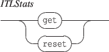

Next: 7.5.2 The 'debug' nodes
Up: 7.5 Application static nodes
Previous: 7.5 Application static nodes
Contents
Index
7.5.1 The 'stats' nodes

- get gives the count of handled messages at OSC and UDP levels: the UDP count indicates the count of messages received from the network, the OSC count includes the UDP count and the messages received internally.
- reset resets the counters to zero. Note that querying the stats node increments at least the OSC the counter.
EXAMPLE
Answer to a get message addressed to /ITL/stats
Grame - INScore project